◆「拉斯維加斯御前試合Pick Up2召喚(每日交替)」期間◆
期間:2019年8月21日(三) 17:00～9月4日(三) 11:59
舉辦期間限定「拉斯維加斯御前試合Pick Up2召喚(每日交替)」！
期間限定從者「★5(SSR)阿爾托莉亞・潘德拉剛(Ruler)」「★4(SR)謎之Alterego・Λ」「★4(SR)沖田・J・總司」自期間限定活動「見參！ 拉斯維加斯御前試合～泳裝劍豪七色勝負！」新登場！
「★4(SR)謎之Alterego・Λ」「★4(SR)沖田・J・總司」以每日交替Pick Up！
「★5(SSR)阿爾托莉亞・潘德拉剛(Ruler)」常駐Pick Up。
詳情請在聖晶石召喚畫面左下的召喚詳細確認。
「★5(SSR)プールサイド・バー」「★4(SR)レディース＆ジェントルメン」「★3(R)羊の數え歌」做為期間限定概念禮裝登場！
裝備上述3種概念禮裝的話，在期間限定活動「見參！ 拉斯維加斯御前試合～泳裝劍豪七色勝負！」中會提升活動道具的掉落獲得數。
◆有關從者的注意◆
※「★5(SSR)阿爾托莉亞・潘德拉剛(Ruler)」「★4(SR)謎之Alterego・Λ」「★4(SR)沖田・J・總司」在Pick Up期間結束後不會追加到故事召喚。
※請注意「拉斯維加斯御前試合Pick Up2召喚(每日交替)」做為每日交替，「★4(SR)謎之Alterego・Λ」「★4(SR)沖田・J・總司」就算Pick Up期間中也會有不被抽出的日子。
◆有關概念禮裝的注意◆
※請注意會做為抽出對象的期間限定概念禮裝只限「★5(SSR)プールサイド・バー」「★4(SR)レディース＆ジェントルメン」「★3(R)羊的數え歌」，其他的期間限定概念禮裝為抽出對象外。
※「★3(R)羊の数え歌」在Pick Up期間中，也能靠友情點數召喚獲得。
※請注意自友情點數召喚抽出的「★3(R)羊の数え歌」在自動變還設定登錄★3(R)概念禮裝的情況，會變成自動變還的對象。
Pick Up期間中，期間限定從者、期間限定概念禮裝的出現機率提升！
11次召喚中確定1張★4(SR)以上和確定1位★3(R)以上的從者！ ※確定★4(SR)以上包含從者和概念禮裝。 ※本頁面皆為開發中圖片。會有與實際圖片相異的情況。
◆「拉斯維加斯御前試合Pick Up2召喚(每日交替)」Pick Up內容◆
| Pick Up期間 | Pick Up內容 | |
|---|---|---|
| 全天Pick Up | 每日交替Pick Up | |
| 8/21(三) 17:00～ 8/22(四) 22:59 |
★5 阿爾托莉亞・潘德拉剛(Ruler) | ★4 謎之Alterego・Λ ★4 沖田・J・總司 |
| 8/22(四) 23:00～8/23(五) 22:59 | ★5 阿爾托莉亞・潘德拉剛(Ruler) | ★4 謎之Alterego・Λ |
| 8/23(五) 23:00～8/24(六) 22:59 | ★5 阿爾托莉亞・潘德拉剛(Ruler) | ★4 沖田・J・總司 |
| 8/24(六) 23:00～8/25(日) 22:59 | ★5 阿爾托莉亞・潘德拉剛(Ruler) | ★4 謎之Alterego・Λ ★4 沖田・J・總司 |
| 8/25(日) 23:00～ 8/28(三) 22:59 |
★5 阿爾托莉亞・潘德拉剛(Ruler) | ★4 謎之Alterego・Λ |
| 8/28(三) 23:00～ 8/31(六) 22:59 |
★5 阿爾托莉亞・潘德拉剛(Ruler) | ★4 沖田・J・總司 |
| 8/31(六) 23:00～ 9/4(三) 11:59 |
★5 阿爾托莉亞・潘德拉剛(Ruler) | ★4 謎之Alterego・Λ ★4 沖田・J・總司 |
※請注意會以每日交替變更Pick Up的從者。

 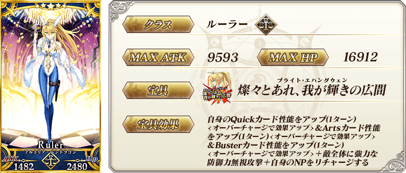
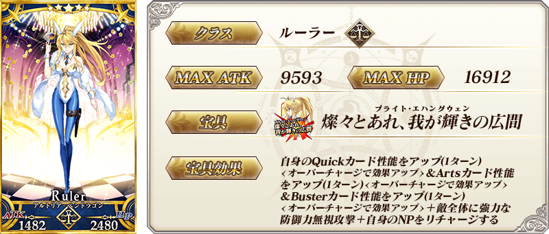


※請注意「謎之Alterego・Λ」為從者名，職階則是Lancer。
 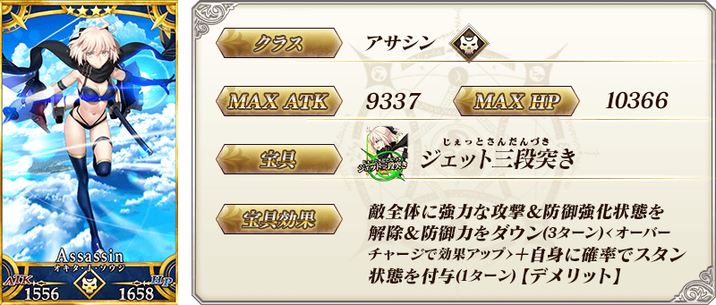
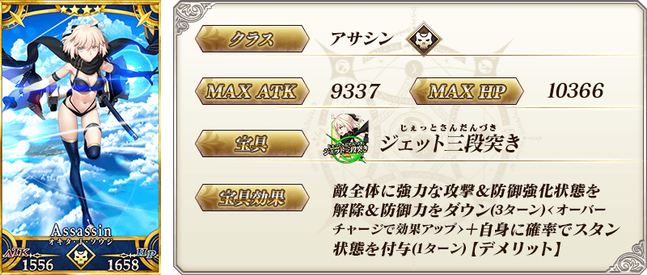

| 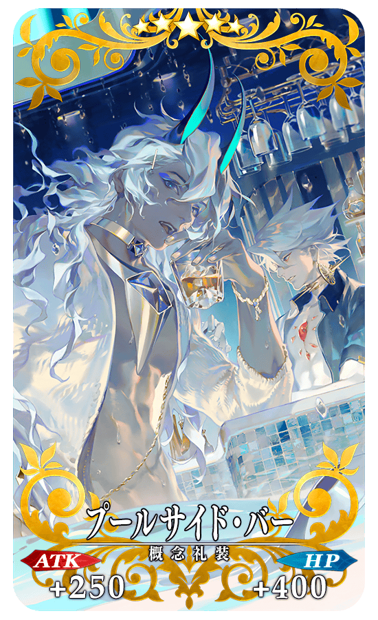 |
★★★★★SSR |

|
★★★★SR
|

| 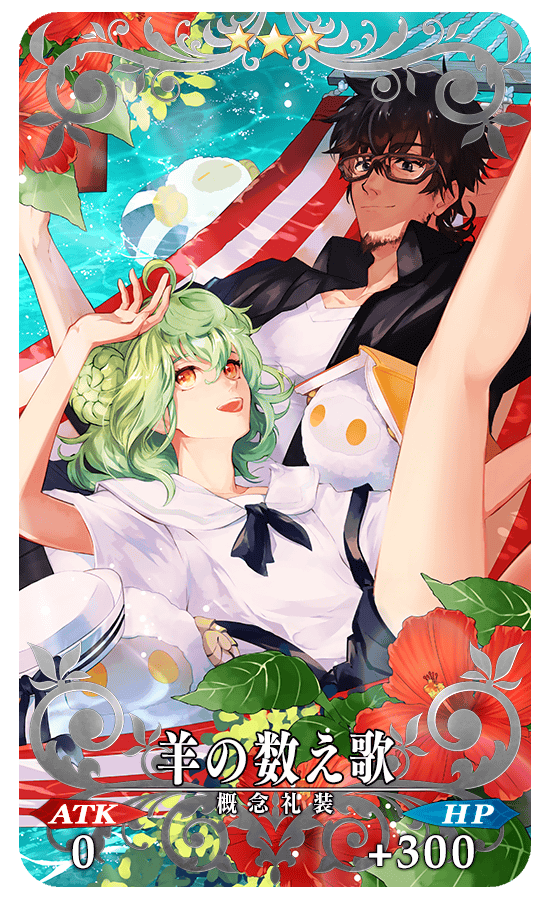 |
★★★R |
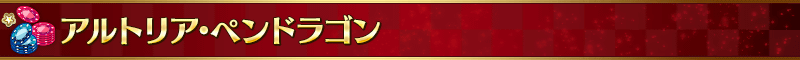
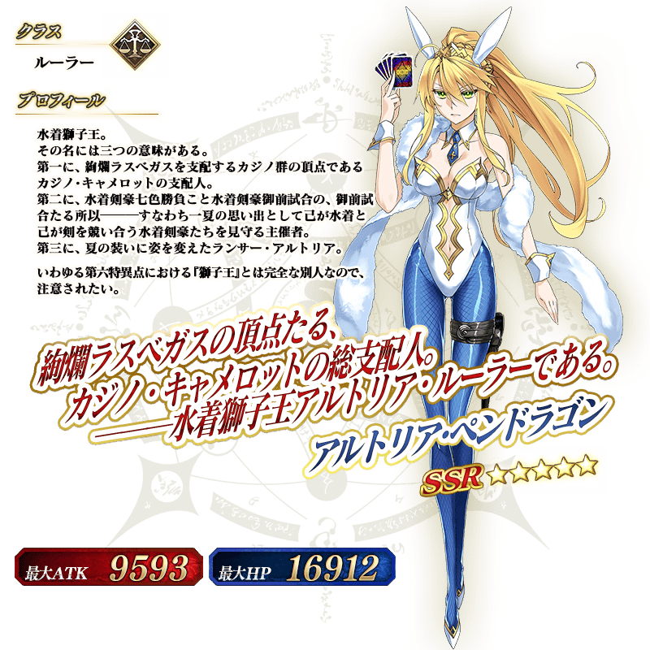
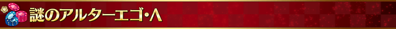
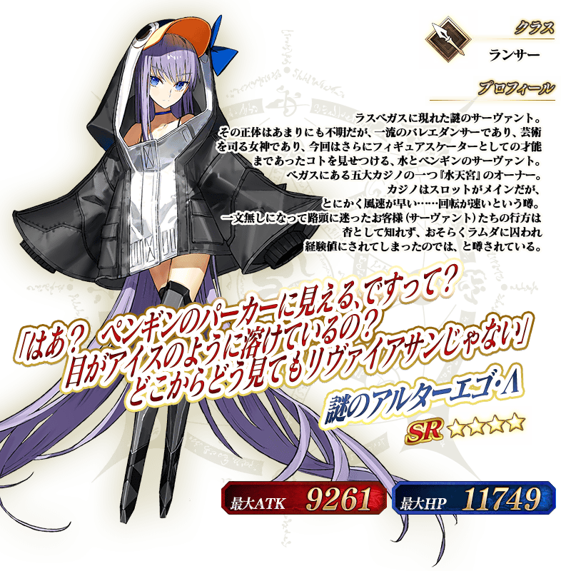

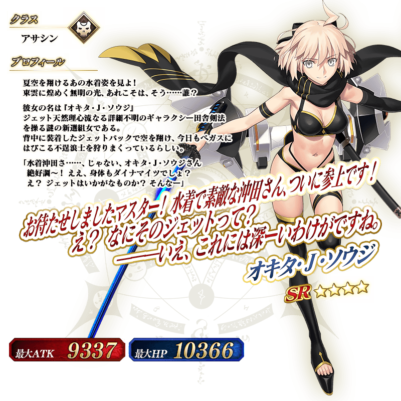

做為期間限定活動「見參！ 拉斯維加斯御前試合～泳裝劍豪七色勝負！」的報酬，「★4(SR)謎之Alterego・Λ」的靈衣開放權登場！
可入手上述靈衣開放權做為本活動活動任務的報酬。
另外，想要靈衣開放的話，除了靈衣開放權外必須再加上一些開放條件。
◆有關靈衣開放權的注意◆
※這次追加的「★4(SR)謎之Alterego・Λ」的靈衣是只有外觀的變化，語音沒變化的「簡易靈衣」。
※「★4(SR)謎之Alterego・Λ」的靈衣開放權，只限期間限定活動「見參！ 拉斯維加斯御前試合～泳裝劍豪七色勝負！」的活動舉辦期間才能入手。
※請注意未持有「★4(SR)謎之Alterego・Λ」的情況，可入手靈衣開放權。但無法進行靈衣開放。
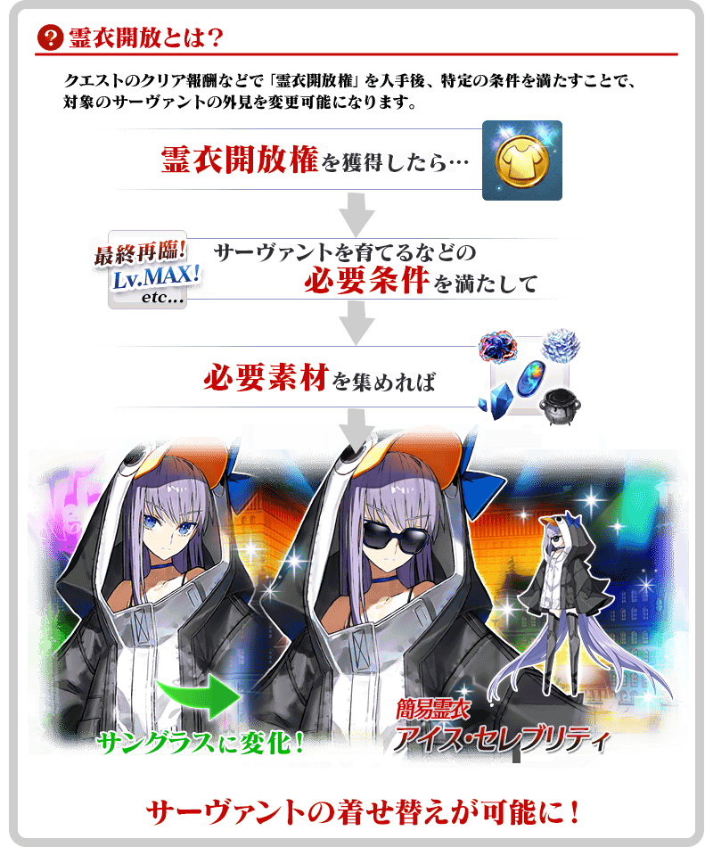
※「靈衣開放」後會自動切換戰鬥角色和圖示。若想回到「靈衣開放」前的狀態和變成其他再臨階段的情況，可自從者詳細畫面變更。 ※語音與「靈衣開放」前的狀態相同(只有個人空間(マイルーム)播放的語音一部份變更)。 ※透過「靈衣開放」只變更從者的外觀，職階和數值沒有變化。

「靈衣開放」是自強化畫面進行。
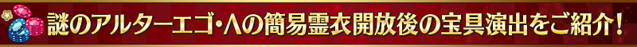
【8月26日(一) 17:00追記】
介紹開放簡易靈衣「アイス・セレブリティ」「★4(SR)謎之Alterego・Λ」的寶具演出！
在「Fate/Grand Order」官方網站內的公告中，以影片公開寶具演出，敬請確認。

介紹「★5(SSR)阿爾托莉亞・潘德拉剛(Ruler)」「★4(SR)謎之Alterego・Λ」「★4(SR)沖田・J・總司」的寶具演出！
在「Fate/Grand Order」官方網站內的公告中，以影片公開寶具演出，敬請確認。
※「★5(SSR)阿爾托莉亞・潘德拉剛(Ruler)」的寶具會根據再臨階段變化演出。
※「★4(SR)沖田・J・總司」的寶具名會根據再臨階段變化。
※8月22日(四) 17:00修正
其他還有，期間限定活動「見參！ 拉斯維加斯御前試合～泳裝劍豪七色勝負！」和期間限定「拉斯維加斯御前試合Pick Up1召喚(每日交替)」、期間限定「【週日限定】梅林Pick Up召喚」同時舉辦！
關於詳情，請自下述橫幅確認。
■「見參！ 拉斯維加斯御前試合～泳裝劍豪七色勝負！」詳細情報

■「拉斯維加斯御前試合Pick Up1召喚(每日交替)」詳細情報

■「【週日限定】梅林Pick Up召喚」詳細情報